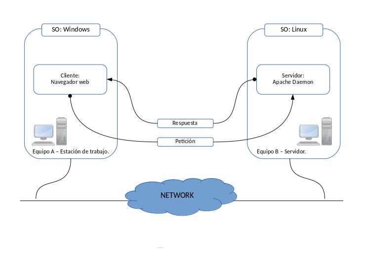
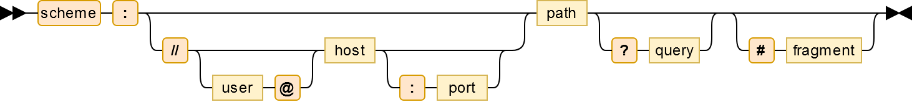
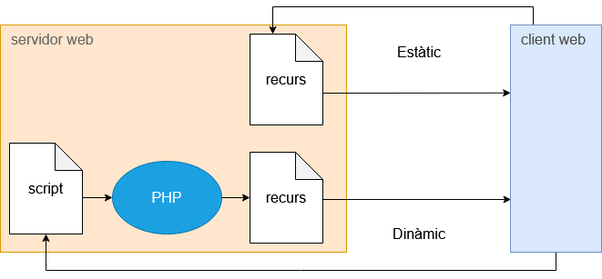
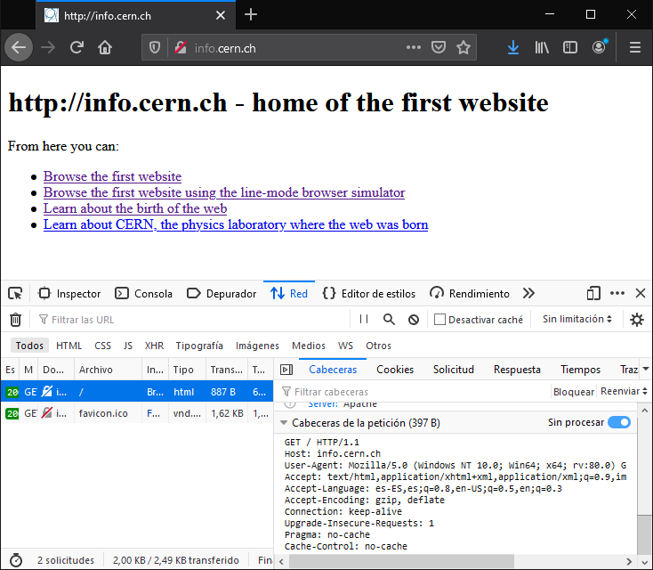

Com funciona una aplicació web
El navegador demana, el servidor respon: què passa entre tots dos quan obres una web.
Què sabràs fer en acabar
- Explicar què és una aplicació web i qui fa cada feina: client i servidor.
- Separar una URL en les seves parts i dir quina arriba al servidor.
- Llegir una petició i una resposta HTTP senzilles.
- Distingir contingut estàtic de contingut dinàmic.
- Enumerar què necessita un servidor per executar un gestor de continguts.
Client i servidor
Una aplicació web és un programa que fas servir amb el navegador, sense instal·lar res a l'ordinador. Es reparteix en dues bandes que parlen per HTTP:
| Banda | Qui és | Què fa |
|---|---|---|
| Client (frontend) | El navegador: Firefox, Chrome… | Inicia la petició, interpreta l'HTML, el CSS i el JavaScript i ho mostra. |
| Servidor (backend) | Un programa com Apache o nginx | Respon la petició: entrega un fitxer o executa un programa que el genera. |

Client i servidor poden tenir sistemes diferents: HTTP és un estàndard i tots dos l'entenen igual.
Les parts d'una URL
La URL identifica un recurs: una pàgina, una imatge, un vídeo. Té fins a set parts:

| Part | Exemple | Per a què serveix |
|---|---|---|
| Esquema | https | Protocol d'accés |
| Usuari | joan@ | Identificació, poc habitual avui |
| Host | info.cern.ch | Nom o IP del servidor |
| Port | :443 | Porta del servidor; s'omet si és la de sempre |
| Camí | /index.html | Quin recurs es vol |
| Consulta | ?q=animals | Dades extra per al programa que respon |
| Fragment | #seccio2 | Punt de la pàgina; no arriba al servidor |
Petició i resposta
HTTP és text. El navegador envia una petició amb un mètode (GET per demanar, POST per enviar dades), el camí i unes capçaleres. El servidor contesta amb un codi d'estat, capçaleres i el contingut.
| Codi | Vol dir |
|---|---|
200 OK | Aquí tens el recurs |
301 / 302 | El recurs és en una altra adreça |
403 Forbidden | Existeix, però no hi pots accedir |
404 Not Found | No existeix |
500 | El programa del servidor ha fallat |
Estàtic i dinàmic
Un recurs estàtic és un fitxer que el servidor entrega tal qual: una pàgina HTML, una imatge. Si recarregues, reps exactament el mateix.
Un recurs dinàmic el genera un programa a cada petició, normalment en PHP, Python o JavaScript. El programa pot llegir la consulta de la URL, consultar una base de dades i construir una resposta diferent per a cada usuari.

La mateixa hora, dues vegades
data.html conté el text «La data del servidor és 20 d'octubre»: digui el que digui el rellotge, sempre respon això. data.php demana l'hora al sistema cada vegada que algú hi entra, i cada recàrrega mostra l'hora del moment. El navegador rep HTML en tots dos casos: no sap si l'ha escrit una persona o un programa.
Què necessita un gestor de continguts
WordPress, Moodle o Nextcloud són aplicacions dinàmiques. Per funcionar demanen sempre el mateix conjunt, la pila LAMP:
| Peça | Paper | Al laboratori |
|---|---|---|
| Linux | Sistema operatiu del servidor | Ubuntu 26.04 LTS en un escriptori d'IsardVDI |
| Apache | Servidor web | Apache 2.4 |
| MySQL | Base de dades | MySQL 8.4 |
| PHP | Executa el codi de l'aplicació | PHP 8.5 |
Abans d'instal·lar una aplicació cal comprovar aquests requeriments a la seva documentació: versions de PHP i de base de dades i extensions necessàries.
Veure la conversa HTTP
A Firefox, F12 obre les eines de desenvolupador. A la pestanya Xarxa, recarrega la pàgina i clica un recurs: veuràs la petició, les capçaleres i el codi d'estat. Des del terminal, curl -I mostra només les capçaleres de la resposta:
curl -I http://info.cern.ch/ HTTP/1.1 200 OK Server: Apache Content-Type: text/html

Criteris professionals
- Consulta els requeriments de l'aplicació abans d'instal·lar res.
- Fes servir
httpssempre que hi hagi usuaris i contrasenyes. - Un programa del servidor no ha de fer mai el que diu la URL sense comprovar-ho: qui controla la consulta controlaria el servidor.
Errors habituals
- Pensar que el fragment
#arriba al servidor -
Causa Es confon la URL sencera amb la petició.
Solució El fragment el gestiona el navegador; al servidor només hi arriba fins a la consulta.
- Obrir un
.phpamb doble clic i veure el codi -
Causa Sense servidor no hi ha ningú que l'executi.
Solució Els fitxers dinàmics s'obren sempre a través del servidor web:
http://….
Resum
- El client demana i el servidor respon, sempre per HTTP.
- Una URL té esquema, host, port, camí, consulta i fragment.
- Els codis d'estat diuen com ha anat: 200, 301, 403, 404, 500.
- Estàtic: el fitxer tal qual. Dinàmic: un programa el genera a cada petició.
- Els gestors de continguts necessiten una pila LAMP: Linux, Apache, MySQL i PHP.
Comprova el que has après
https://web.internal/blog?pag=2#comentaris no arriba al servidor?404?Al currículum
Contingut 1.1 Instal·lació en sistemes operatius lliures i propietaris.
Contingut 1.4 Funcionament dels gestors de continguts.
CA 1.1 Identifica els requeriments necessaris per instal·lar gestors de continguts.